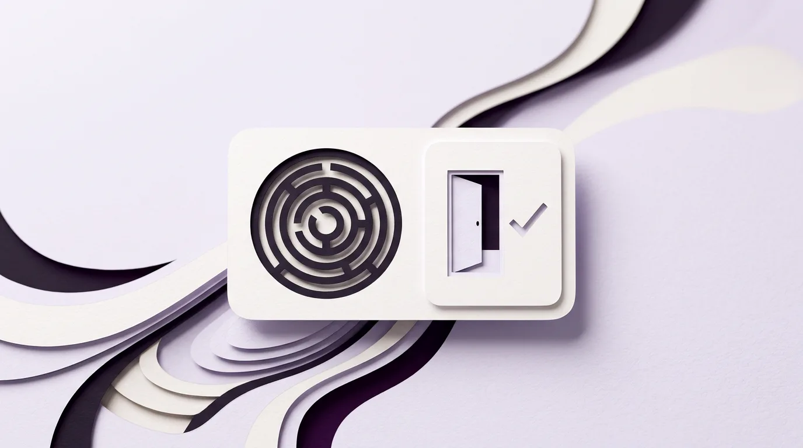

Dark pattern adalah trik desain tampilan pada aplikasi atau website yang sengaja dirancang untuk mengecoh perhatian pengguna. Lewat trik ini, pengguna tanpa sadar melakukan tindakan yang menguntungkan perusahaan tetapi merugikan diri mereka sendiri. Para peneliti dunia kini juga menyebutnya sebagai Deceptive Design Patterns (pola desain yang menipu). Trik ini memutarbalikkan kebiasaan mata manusia saat memindai layar, sehingga kita tidak sengaja mencentang asuransi tambahan, salah menekan iklan palsu, atau menyerah saat ingin membatalkan langganan bulanan.
Perhatikan tiga kejadian yang sering muncul di layar ponsel sehari-hari. Pertama, saat mendaftar uji coba
gratis (free trial), kamu cukup menekan satu tombol besar dalam lima detik. Namun, saat bulan
depannya kamu ingin berhenti berlangganan agar saldo rekening tidak terpotong otomatis, tombol
"Berhenti Langganan" itu mendadak lenyap dari aplikasi ponsel. Kamu dipaksa melewati tujuh halaman
menu yang tersembunyi rapat. Kedua, saat kamu hendak menutup iklan di layar, tanda silang (X) di
pojok kanan atas dibuat sekecil debu, atau diganti gambar tanda silang palsu yang justru membuka situs lain.
Jika kamu pernah mengalami kejadian tersebut lalu menyalahkan diri sendiri karena merasa kurang teliti, berhenti menyalahkan dirimu sekarang. Kamu salah klik bukan karena kamu ceroboh. Ada tim perancang di balik layar yang memang sengaja memasang perangkap visual agar jarimu terpeleset. Kita akan mengurai mengapa trik ini bisa mengecoh otak kita, bagaimana sejarah penamaannya oleh seorang ilmuwan kognitif pada tahun 2010, lima jenis jebakan yang paling sering menguras dompet, serta cara membedakan pemasaran yang jujur dari manipulasi desain.
Apa Sebenarnya Dark Pattern Itu dan Kenapa Mata Kita Sangat Mudah Tertipu di Layar Ponsel
Selama ini, ketika kita belajar tentang apa itu UI dan UX serta perbedaannya, kita selalu diajarkan bahwa tugas seorang desainer antarmuka adalah membuat tampilan yang jernih, mudah dipahami, dan membantu pengguna menyelesaikan kebutuhannya tanpa kebingungan. Lalu, mengapa ada antarmuka aplikasi yang justru sengaja dibuat membingungkan?
Jawabannya terletak pada penyalahgunaan ilmu psikologi manusia demi mengejar target angka jangka pendek. Ketika sebuah perusahaan terlalu terobsesi menaikkan persentase pelanggan yang mendaftar atau membeli barang tambahan, sebagian pengelola produk tergoda menggunakan jalan pintas: alih-alih memperbaiki mutu produknya, mereka memilih mengakali tampilan tombolnya.

Sejarah Tahun 2010 Ketika Pakar Kognitif Harry Brignull Membongkar Sisi Gelap Desain Antarmuka
Istilah Dark Patterns pertama kali diperkenalkan ke publik pada bulan Agustus 2010 oleh Harry Brignull, seorang peneliti pengalaman pengguna asal Inggris yang memegang gelar doktor (PhD) di bidang Ilmu Kognitif (Cognitive Science) dari University of Sussex. Latar belakang Brignull sebagai ilmuwan kognitif sangat penting untuk memahami mengapa ia begitu geram melihat fenomena ini pada akhir dekade 2000-an.
Di laboratorium ilmu kognitif, para ilmuwan mempelajari bagaimana bola mata manusia bergerak memindai cahaya, bagaimana otak kita mengenali warna yang kontras, dan di titik mana perhatian manusia mudah lengah saat kelelahan. Awalnya, temuan-temuan ilmiah tersebut dipakai untuk merancang kokpit pesawat terbang dan rambu keselamatan jalan raya agar manusia tidak salah menekan tombol darurat. Namun, seiring menjamurnya situs belanja dan pemesanan tiket pesawat murah pada akhir 2000-an, Brignull menyaksikan ilmu pengetahuan tersebut dipakai secara terbalik untuk menjebak konsumen awam.
Untuk melawan praktik curang tersebut, Harry Brignull meluncurkan situs perpustakaan terbuka bernama
darkpatterns.org pada tahun 2010 (yang kini telah diperbarui namanya menjadi
deceptive.design agar maknanya lebih tegas menunjuk pada tindakan "desain penipuan"). Ia menyusun
daftar klasifikasi jebakan desain yang kemudian menjadi rujukan utama para peneliti dunia:
- Tahun 2018 (Kajian Etika Desainer di Konferensi ACM CHI): Peneliti Colin M. Gray dan rekan-rekannya dari Purdue University menerbitkan makalah berjudul The Dark (Patterns) Side of UX Design yang membuktikan bahwa jebakan desain ini bukan terjadi karena ketidaksengajaan teknis, melainkan hasil keputusan sadar yang sering kali dipaksakan oleh target bisnis.
- Tahun 2019 (Pemindaian 11.000 Situs Belanja oleh Princeton University): Tim peneliti yang dipimpin oleh Arunesh Mathur dari Princeton University dan University of Chicago membuat program otomatis untuk memeriksa 11.000 situs belanja paling populer di dunia. Hasilnya mengejutkan: mereka menemukan 1.818 kasus dark pattern yang tersebar di 1.254 situs web (lebih dari 11 persen situs belanja populer kedapatan memasang perangkap visual).
- Tahun 2022 hingga Sekarang (Pelarangan Hukum dan Denda Internasional): Berkat bukti akademik tersebut, Organisation for Economic Co-operation and Development (OECD) menerbitkan laporan resmi Dark Commercial Patterns pada tahun 2022, dan Uni Eropa secara tegas melarang penggunaan dark pattern melalui Pasal 25 Digital Services Act (DSA) dengan ancaman denda hingga miliaran rupiah.
Cara Kerja Psikologi Kebiasaan Membaca Cepat yang Dimanfaatkan untuk Mengecoh Jari Pengguna
Mengapa orang yang berpendidikan tinggi dan melek teknologi sekalipun tetap bisa terjebak oleh dark pattern? Karena saat menggunakan ponsel atau laptop, manusia hampir tidak pernah membaca setiap kata di layar dari ujung kiri atas sampai ujung kanan bawah seperti membaca buku novel.
Otak manusia memiliki dua cara berpikir yang oleh psikolog pemenang Nobel Ekonomi, Daniel Kahneman, dalam bukunya Thinking, Fast and Slow (2011) dibagi menjadi Sistem 1 (berpikir cepat, otomatis, dan mengandalkan kebiasaan mata) serta Sistem 2 (berpikir lambat, teliti, dan penuh konsentrasi). Saat kita sedang memesan tiket, membayar belanjaan, atau menutup jendela pengumuman di layar HP, otak kita hampir selalu menggunakan Sistem 1 yang serba cepat:
- Jari Kita Otomatis Menekan Tombol yang Paling Berwarna Terang: Selama puluhan tahun, aplikasi melatih otak kita bahwa tombol berwarna mencolok (biru terang, hijau, atau ungu pekat) adalah tombol untuk melanjutkan langkah yang aman, sedangkan tombol abu-abu tipis adalah tombol batal. Perancang dark pattern sengaja menukar warna tersebut: tombol "Setuju Berlangganan Berbayar" diberi warna terang mencolok, sementara tombol "Lewati" disamarkan hingga nyaris menyatu dengan warna latar belakang.
- Mata Kita Melewatkan Kalimat Negatif Ganda (Double Negative): Saat terburu-buru, mata kita hanya menangkap kata kunci di awal kalimat. Perancang jebakan sengaja menulis kalimat berbelit seperti: "Jangan centang kotak ini apabila Anda tidak ingin membatalkan kiriman penawaran promo." Otak yang sedang lelah akan kebingungan mencerna kata "jangan", "tidak", dan "membatalkan" dalam satu kalimat yang sama.
Sebagaimana pernah kita pelajari saat membahas mengapa terlalu banyak pilihan di website membuat pengunjung bingung, beban pikiran manusia di depan layar sangat terbatas. Dark pattern sengaja memanfaatkan kelelahan mata tersebut untuk mengarahkan jari kita ke tombol yang salah.
Lima Contoh Dark Pattern yang Paling Sering Menjebak Kita di Aplikasi Sehari-hari
Dari belasan kategori jebakan yang dikumpulkan oleh Harry Brignull dan peneliti Princeton University, ada lima jenis jebakan desain yang paling sering mengincar pengguna aplikasi dan situs web di Indonesia. Mengenali kelima namanya akan membuat matamu langsung waspada begitu melihat gejalanya di layar.
Jebakan Hotel Kecoak Saat Mau Berhenti Langganan dan Kalimat Penolakan yang Mempermalukan Pengguna
Dua jebakan pertama ini paling sering muncul pada layanan berlangganan bulanan (seperti aplikasi tontonan film, penyimpanan cloud, koran digital, atau keanggotaan VIP) serta jendela pop-up pendaftaran diskon:
- 1. Jebakan Hotel Kecoak (Roach Motel / Hard to Cancel): Harry Brignull menamai trik ini seperti alat perangkap kecoak. Perangkap kecoak memiliki corong masuk yang licin sehingga mudah dimasuki dalam satu detik, tetapi sangat sulit dicari jalan keluarnya. Batas perumpamaan ini terletak pada pintu keluarnya: aplikasi tidak benar-benar mengunci tombol keluar secara mutlak karena hal itu melanggar hukum, melainkan menimbun tombol tersebut di balik langkah yang melelahkan agar pengguna menyerah sebelum selesai. Saat mendaftar langganan berbayar, kamu cukup menyentuh satu tombol di layar HP. Sebaliknya, saat ingin berhenti berlangganan (unsubscribe), kamu dipaksa membuka situs lewat komputer, melewati lima halaman pertanyaan yang menukar-nukar warna tombol, atau disuruh mengirim email dan menelepon petugas di jam kerja.
- 2. Mempermalukan Pengguna yang Menolak (Confirmshaming): Saat kamu membuka sebuah website, sering muncul jendela tawaran diskon yang menutupi layar dengan dua pilihan tombol. Tombol pertama dibuat besar dan cerah bertuliskan: "Ya, Beri Saya Diskon 20%!" Namun, di bawahnya tidak tertulis kata "Tutup" atau "Tidak, Terima Kasih" yang sopan. Perancang justru menulis kalimat mengejek seperti: "Tidak, saya orang kaya yang suka membuang-buang uang" atau "Tidak, saya tidak peduli dengan masa depan karier saya." Trik menyuntikkan rasa bersalah agar pengguna batal menutup jendela inilah yang disebut Confirmshaming.
Harga Tetesan Siluman di Kasir Terakhir, Centang Otomatis, dan Tombol Silang Palsu
Jika dua trik sebelumnya menyerang perasaan dan kesabaran kita, tiga trik berikutnya secara langsung mengincar isi dompet dan keamanan perangkat kita saat bertransaksi:
- 3. Harga Tetesan Siluman di Langkah Terakhir (Drip Pricing / Hidden Costs): Bayangkan kamu melihat iklan tiket pesawat, kamar penginapan, atau pesan-antar makanan dengan harga besar-besar Rp85.000. Karena harganya murah, kamu pun menghabiskan waktu 10 menit untuk memilih jadwal, mengetik nomor KTP, dan memilih metode pembayaran. Begitu sampai di halaman kasir paling akhir, total tagihannya tiba-tiba membengkak menjadi Rp142.000 karena muncul tambahan biaya layanan platform, biaya penanganan sistem, dan biaya kemasan wajib yang sama sekali tidak disebutkan di halaman depan. Mengapa perusahaan meneteskan biaya tambahan itu sedikit demi sedikit di akhir? Karena mereka memanfaatkan efek psikologi bernama Sunk Cost Fallacy (rasa sayang karena sudah terlanjur lelah meluangkan waktu), sehingga pengguna akhirnya malas membatalkan pesanan dan pasrah membayar lebih mahal.
- 4. Menyelinapkan Barang ke Keranjang Lewat Centang Otomatis (Sneak into Basket): Saat kamu membeli tiket perjalanan atau barang elektronik di aplikasi belanja, perhatikan bagian bawah ringkasan pembayaranmu. Banyak aplikasi yang diam-diam sudah mencentang otomatis kotak "Tambahkan Asuransi Perjalanan Rp25.000", "Proteksi Layar Retak", atau "Donasi Pembulatan Tagihan" tanpa meminta persetujuanmu lebih dulu. Jika kamu langsung menekan tombol bayar tanpa menggulir layar untuk mematikan centang kecil tersebut, uangmu langsung terpotong untuk produk tambahan yang tidak pernah kamu minta.
- 5. Iklan Menyamar dan Tombol Silang Palsu (Disguised Ads / Bait and Switch): Di situs
unduhan berkas atau bacaan gratis, sering kali terdapat tiga tombol bertuliskan "DOWNLOAD"
berukuran raksasa berwarna hijau menyala, padahal tombol unduh yang asli hanyalah tulisan teks kecil di
sela-sela paragraf. Dua tombol raksasa lainnya adalah iklan yang menyamar (Disguised Ads). Lebih
parah lagi, sebagian iklan di aplikasi ponsel sengaja menggambar ikon tanda silang (
X) palsu di pojok gambar iklannya; saat kamu menyentuh tanda silang tersebut untuk menutup iklan, kamu justru diarahkan membuka situs luar atau mengunduh aplikasi asing.
Mengapa Jebakan Desain Justru Merugikan Bisnis dan Bedanya dengan Pemasaran yang Jujur
Melihat kelima contoh di atas, sebagian pemilik usaha atau manajer produk pemula mungkin bertanya-tanya dalam hati: "Tetapi bukankah trik centang otomatis dan menyembunyikan tombol batal langganan itu terbukti bikin pemasukan perusahaan naik cepat?"
Di atas kertas laporan minggu pertama, jawabannya memang tampak seperti itu. Namun, jika dilihat dari kesehatan bisnis jangka panjang, dark pattern adalah bom waktu yang merusak perusahaan dari dalam.
Ilusi Kenaikan Angka Jangka Pendek yang Berakhir Menjadi Tumpukan Komplain di Meja Layanan Pelanggan
Sebagaimana pernah kita bahas secara mendalam pada catatan melihat antarmuka dari kacamata dukungan pelanggan (Customer Support), setiap kecurangan kecil yang dipasang oleh tim desain di halaman depan pasti akan dibayar mahal oleh tim layanan pelanggan di halaman belakang.
Ketika seribu pengguna tidak sengaja membayar asuransi siluman atau terpotong saldo kartu kreditnya karena tombol batal langganan disembunyikan, mereka memang menghasilkan uang bagi perusahaan pada hari itu. Akan tetapi, keesokan harinya ratusan pelanggan yang merasa tertipu tersebut akan langsung menyerbu jalur layanan pelanggan dengan kemarahan tinggi:
- Biaya Operasional CS Membengkak: Tim Customer Support terpaksa menghabiskan waktu berjam-jam untuk menenangkan pelanggan yang marah dan memproses pengembalian dana (refund) satu per satu. Biaya waktu kerja staf untuk mengurus satu tiket komplain sering kali lebih mahal daripada keuntungan Rp15.000 dari centang otomatis yang diselundupkan tadi.
- Penalti Sengketa Pembayaran (Chargeback) dari Bank: Jika pelanggan mengadu ke pihak bank penerbit kartu kredit bahwa mereka dijebak oleh tagihan berulang yang tidak bisa dibatalkan, penyedia gerbang pembayaran (payment gateway) dapat menjatuhkan denda chargeback dan menurunkan skor reputasi toko online tersebut.
- Pelanggan Kabur Selamanya dan Menulis Ulasan Bintang Satu: Manusia bisa memaklumi jika sebuah aplikasi sesekali mengalami gangguan teknis, tetapi manusia sangat sulit memaafkan aplikasi yang membuat mereka merasa dibohongi. Sekali pengguna sadar bahwa mereka dijebak oleh dark pattern, mereka akan menghapus aplikasi tersebut dan memperingatkan teman-temannya di media sosial.
Panduan Membedakan Manipulasi Dark Pattern dengan Desain Persuasif yang Jujur
Apakah larangan terhadap dark pattern berarti pemilik website tidak boleh menampilkan label diskon, memberi tahu sisa stok barang, atau memasang jendela konfirmasi? Pemilik website tetap boleh menggunakan semua elemen tersebut selama informasinya jujur dan melindungi kepentingan pengguna.
Kita juga perlu membedakan antara Jebakan Hotel Kecoak (Roach Motel) dengan konsep
Jeda Berpikir yang Melindungi Pengguna (Intentional Friction) yang pernah kita bahas di
artikel bahaya desain serba instan saat
pengguna butuh jeda berpikir. Jika sebuah aplikasi memintamu mengetik ulang kata HAPUS saat
kamu hendak menghapus seluruh proyek kerjamu secara permanen, itu bukanlah dark pattern,
melainkan pagar pengaman agar kamu tidak menangis karena salah pencet. Sebaliknya, jika aplikasi mempersulitmu
hanya saat kamu mau berhenti menyetor uang bulanan, barulah itu disebut dark pattern.
Agar kamu sebagai desainer, pengembang, maupun pemilik usaha bisa menarik garis batas yang tegas, gunakan tabel perbandingan antara manipulasi dark pattern dan desain persuasif yang jujur berikut ini:
| Situasi di Aplikasi / Website | Cara Curang: Dark Pattern (Menjebak Pengguna) | Cara Etis: Honest Design (Menghargai Pengguna) |
|---|---|---|
| Menawarkan Produk Tambahan (Asuransi / Garansi) | Mencentang otomatis kotak asuransi secara diam-diam (Sneak into Basket) agar pengguna tidak sadar ikut membayar. | Membiarkan kotak pilihan dalam keadaan tidak tercentang, lalu menjelaskan manfaat asuransi secara jelas agar pengguna memilih dengan sadar. |
| Menampilkan Sisa Stok atau Waktu Diskon | Memasang jam hitung mundur palsu (Fake Urgency) yang selalu mengulang dari 10 menit setiap kali halaman dimuat ulang. | Menampilkan angka sisa stok yang benar-benar terhubung ke jumlah asli di gudang dan tanggal berakhir promo yang nyata. |
| Menampilkan Harga Barang & Biaya Layanan | Menyembunyikan biaya layanan wajib hingga langkah pembayaran paling akhir (Drip Pricing). | Menampilkan rincian harga barang beserta estimasi biaya layanan dan pajak sejak di halaman keranjang awal. |
| Jendela Tawaran Promo / Newsletter | Memakai kalimat penolakan yang mengejek (Confirmshaming) dan menyamarkan tombol tutup. | Menyediakan tombol "Tidak, Terima Kasih" atau tanda silang (X) yang
jelas, sopan, dan mudah disentuh jari. |
| Menu Berhenti Langganan (Unsubscribe) | Menyembunyikan menu pembatalan di luar aplikasi dan memaksa pengguna melewati 7 halaman (Roach Motel). | Menaruh tombol "Batalkan Langganan" di halaman pengaturan akun yang sama mudahnya dengan saat pertama kali mendaftar. |
Langkah Praktis Melindungi Diri dari Jebakan Aplikasi dan Membangun Desain yang Menghargai Pengguna
Memahami cara kerja dark pattern memberi kita sepasang kacamata baru setiap kali menatap layar ponsel maupun laptop. Sebagaimana kebiasaan yang kita latih pada artikel cara berpikir dan menganalisis desain website seperti seorang desainer, begitu kita tahu nama sebuah trik, trik tersebut kehilangan separuh kekuatannya untuk menipu kita.
Tiga Kebiasaan Sederhana bagi Pengguna agar Tidak Lagi Kehilangan Uang karena Salah Klik
Sebagai pengguna aplikasi dan pembeli online, jalankan tiga langkah pelindung dompet ini setiap kali bertransaksi:
- Pasang Alarm Pengingat H-2 Saat Mendaftar Uji Coba Gratis (Free Trial): Peringatan: jangan menunda pencatatan jadwal karena tagihan otomatis bekerja tanpa meminta persetujuan ulang. Jika kamu mendaftar layanan free trial 7 hari, buka aplikasi kalender di HP-mu dan pasang alarm pengingat dua hari sebelum masa uji coba berakhir. Jika kamu berlangganan lewat Google Play Store atau Apple App Store, tekan tombol "Batalkan Langganan" lima menit setelah mendaftar agar masa gratisnya tetap berjalan tanpa memotong saldo di akhir minggu.
- Buka Rincian Tagihan Lima Detik Sebelum Menekan Tombol Bayar: Peringatan: jangan langsung menekan tombol "Bayar Sekarang" yang berwarna mencolok karena biaya tambahan sering diselipkan di baris rincian. Jika kamu berada di halaman kasir terakhir, ketuk tanda panah di sebelah tulisan "Total Pembayaran". Matikan semua kotak centang asuransi, proteksi tambahan, atau donasi otomatis yang tidak kamu butuhkan.
- Periksa Tombol Berwarna Redup Terlebih Dahulu pada Jendela Pop-Up: Jika muncul jendela tawaran mendadak yang menutupi layar, baca teks pada tombol yang berwarna paling redup atau berukuran kecil terlebih dahulu. Pilihan "Lanjutkan Tanpa Biaya Tambahan" hampir selalu diletakkan pada tombol yang paling tidak mencolok tersebut.
Tiga Pertanyaan Uji Kejujuran bagi Desainer dan Pemilik Website Sebelum Merilis Halaman Baru
Sementara itu, bagi kamu yang berprofesi sebagai desainer UI/UX, pengembang frontend, atau pemilik usaha yang sedang merancang halaman produkmu sendiri, gunakan tiga pertanyaan uji kejujuran ini dalam 15 menit sebelum merilis tampilan baru:
- Pertanyaan 1 (Uji Orang Tua Sendiri): "Jika ibu atau ayah saya sendiri yang memakai halaman ini tanpa didampingi siapa-siapa, apakah mereka akan tidak sengaja membeli atau menyetujui sesuatu yang tidak mereka inginkan?" Jika jawabannya iya, perbaiki kontras tombol dan perjelas tulisannya.
- Pertanyaan 2 (Uji Kesetaraan Pintu Masuk dan Pintu Keluar): "Apakah jumlah klik untuk membatalkan layanan ini sama mudahnya dengan jumlah klik saat pengguna mendaftar pertama kali?" Jangan pernah membuat pintu keluar yang lebih sempit daripada pintu masuk.
- Pertanyaan 3 (Uji Kebanggaan Terbuka): "Apakah saya berani menjelaskan alasan di balik warna dan letak tombol ini secara jujur di depan pelanggan saya tanpa merasa malu?" Desain yang baik mendapatkan kepercayaan pelanggan lewat kejelasan manfaatnya, bukan lewat jebakan yang menunggu jari pengguna salah tekan.
Referensi
- Brignull, H. (2010). Dark Patterns: Deceptive Design Patterns in User Interfaces. Deceptive
Design (sebelumnya
darkpatterns.org). https://www.deceptive.design/ - Mathur, A., Acar, G., Friedman, M. J., Lucherini, E., Mayer, J., Chetty, M., & Narayanan, A. (2019). Dark Patterns at Scale: Findings from a Crawl of 11K Shopping Websites. Proceedings of the ACM on Human-Computer Interaction, 3(CSCW), Article 81, 1-32. https://doi.org/10.1145/3359183
- Gray, C. M., Kou, Y., Battles, B., Hoggatt, J., & Toombs, A. L. (2018). The Dark (Patterns) Side of UX Design. Proceedings of the 2018 CHI Conference on Human Factors in Computing Systems (CHI '18), Paper 534, 1-14. https://doi.org/10.1145/3173574.3174108
- OECD. (2022). Dark Commercial Patterns (OECD Digital Economy Papers, No. 336). OECD Publishing, Paris. https://doi.org/10.1787/44f5e846-en
- Kahneman, D. (2011). Thinking, Fast and Slow. Farrar, Straus and Giroux. https://us.macmillan.com/books/9780374533557/thinkingfastandslow
- European Union. (2022). Regulation (EU) 2022/2065 on a Single Market For Digital Services (Digital Services Act / DSA), Article 25: Online Interface Design and Organisation. Official Journal of the European Union. https://eur-lex.europa.eu/eli/reg/2022/2065/oj